6 Validating ecoevolity hyperpriors
Before carrying out the study design, we need to validate that we’ve correctly implemented the hyperpriors on the parameters of the divergence-time priors in ecoevolity. We will do this in two ways:
- Prior check: Validate that ecoevolity samples from the specified prior distribution when using no information from data.
- Coverage check: Validate that when ecoevolity analyzes data simulated under a model with divergence-time hyperpriors, that the credible intervals around parameter estimates include the true value the correct proportion of the time.
6.1 Configuring ecoevolity to use hyperpriors on event times
We’ve implemented a flexible way of placing priors on the parameters of the event_time_prior (the prior on the timing of divergence times and/or population size changes). You can see two examples of this in the following YAML-formatted ecoevolity config files in the project repo:
ecoevolity-configs/dpp-conc-hypergamma-4-10-time-hyperexp-02-pairs-20-sites-20000.ymlecoevolity-configs/dpp-conc-hypergamma-4-10-time-hyperunif-02-pairs-20-sites-20000.yml
In the first file, the following section configures the prior on divergence-time events:
event_time_prior:
exponential_distribution:
mean:
value: 0.2
estimate: true
prior:
exponential_distribution:
mean: 0.2This tells ecoevolity to use an exponential distribution as the prior on divergence times, and the starting value for the mean of that exponential distribution is 0.2. It also tells ecoevolity to estimate the mean of the exponential prior on divergence times, and to place a hyperprior on the mean that is exponentially distributed with a mean of 0.2.
The second file configures divergence times differently:
event_time_prior:
uniform_distribution:
min:
value: 0.0
estimate: false
max:
value: 0.1
estimate: true
prior:
uniform_distribution:
min: 0.0
max: 0.2This tells ecoevolity to use a uniform prior on divergence times with a uniform hyperprior on the maximum of that uniform distribution. We would not normally recommend using a uniform prior on divergence times. As described in the study design section, we are using the uniform prior to assess the original hypothesis for the downward bias for the number of divergence events (Oaks et al. 2013, 2014).
In the examples above, we use the same distribution for the prior and hyperprior. This is not a constraint of the ecoevolity implementation. Rather, it was our arbitrary choice for this study.
6.2 Check sampling from the prior distribution
If working correctly, when ignoring data, the MCMC machinery of ecoevolity should sample from the prior distrbution of the model specified in the config file. To check this, we have implemented the pyco-eco-vet-prior command-line tool in pycoevolity. To use this, first activate the project’s conda environment:
conda activate hyper-timeNext, navigate to the project directory (e.g., cd ~/ecoevolity-hyper-time).
6.2.1 Check sampling of model with exponential hyperprior
To check the correct MCMC sampling of the prior distribution of the model with the exponentially distributed hyperprior on the mean of the divergence-time prior, you can run the following command:
pyco-eco-vet-prior \
--seed 1 \
--ecoevolity-dir bin \
--number-of-runs 40 \
--number-of-procs 8 \
--burnin 501 \
--step 4 \
--sparse-pop-size-plotting \
--output-dir check-exp-prior \
ecoevolity-configs/dpp-conc-hypergamma-4-10-time-hyperexp-02-pairs-20-sites-20000.ymlThe last (positional) argument is the path to the ecoevolity config file we looked at above. Here’s a breakdown of what the other keyword arguments are telling pyco-eco-vet-prior to do:
--seed 1- The number to seed the random number generator; this makes the results repeatable.
--ecoevolity-dir bin-
The directory containing the ecoevolity programs we want
pyco-eco-vet-priorto use. The script we ran to setup the project environment installed a specific version of ecoevolity to thebinfolder. --number-of-procs 8- The number of parallel processes to use when running the ecoevolity MCMC chains.
--number-of-runs 40- Run 40 independent MCMC chains. The config file specifies the length and sample frequency of each chaing. Ecoevolity will ignore data, so these run quite fast.
--burnin 501- The number of samples to ignore from the beginning of each MCMC chain.
--step 4-
This tells
pyco-eco-vet-priorthat we only want to use every 4th MCMC sample (after ignoring the burnin samples). This helps ensure the MCMC samples are effectively independent. --sparse-pop-size-plotting-
This tells
pyco-eco-vet-priorthat we only want to plot the results of the effective population size parameters for two comparisons. In the config file, we place the same prior on the effective population size across all the comparisons, so there’s no need to plot all of them. --output-dir check-exp-prior- The directory where we want all the plots to be written.
In the command above, we run a lot of MCMC chains (40), remove a large number of samples from each as burning (501), and only keep every 4th MCMC sample. There are 2 reasons for this:
- Ecoevolity chains run quickly when ignoring data, so we might as well get a large number of effectively independent samples.
- Sampling the hyperprior on divergence times is tricky when there are no data. With no data to inform the divergence times, there is a lot of covariance among the mean of the prior on the divergence times, the divergence times themselves, and the concentration parameter of the Dirichlet process. Sampling this degree of covariance with (mostly) uni-dimensional MCMC moves is not very efficient, and sometimes requires generous burnin and well-spaced samples from the MCMC chains.
After the pyco-eco-vet-prior run finishes, you should see a new directory called check-exp-prior containing a bunch of SVG files. Each SVG file compares the expected prior distribution to the MCMC samples collected by ecoevolity for a single parameter from the model. The -prior-cdf- files compare the cumulative density of the prior and MCMC samples, and the -prior-qq- files compare the quantiles of the prior and MCMC samples. Let’s take a look at some of these plots to see if the MCMC machinery in ecoevolity seems to be working correctly.
Figure 6.1 shows that the MCMC samples match the hyperprior distribution on the mean of the exponentially distributed prior on divergence times. The cumulative density of the MCMC samples and prior are right on top of each other (left), and the quantiles of the samples and prior fall along the 1:1 line of the QQ plot (right). A Kolmogorov-Smirnov test was unable to differentiate the MCMC samples from the expected prior distribution; the D statistic and p-value are given in the lower right of the cumulative density plot (left) of Figure 6.1.
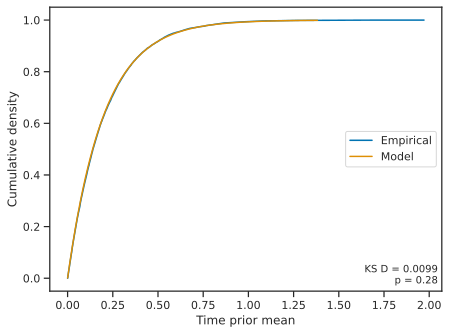
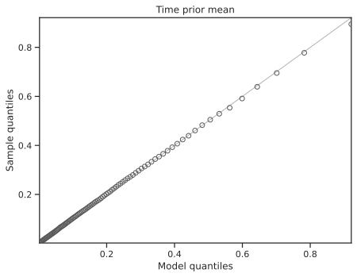
When we look at the divergence time of the first pair of populations, again, the MCMC samples match the expected prior distribution (Figure 6.2).
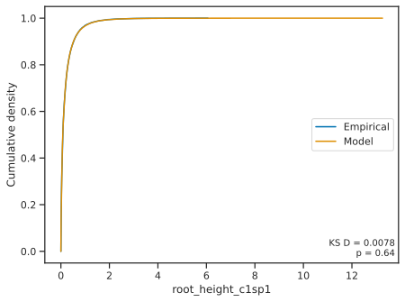
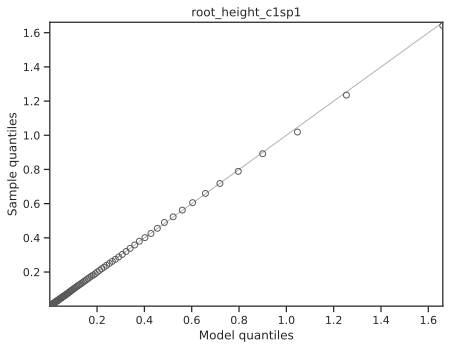
The concentration parameter of the Dirichlet process shows the same results; the MCMC samples match the prior on this parameter (Figure 6.3).
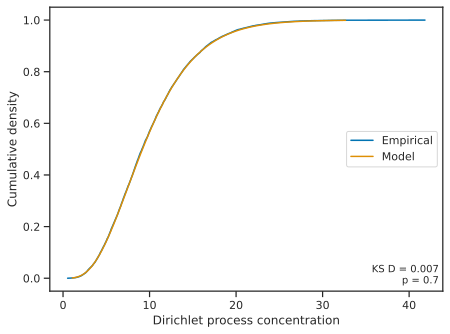
If we look at the number of divergence events, the MCMC samples match the prior distribution (Figure 6.4).
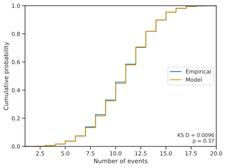
The pyco-eco-vet-prior tool produces more plots that we won’t look at here, but they all show the same pattern of the MCMC samples closely matching the expected prior distribution.
6.2.2 Check sampling of model with uniform hyperprior
Let’s also check the MCMC sampling of the other model we looked at above with a uniform hyperprior on the prior maximum of divergence times. Again, we will use the pyco-eco-vet-prior tool of the pycoevolity software package:
pyco-eco-vet-prior \
--seed 1 \
--ecoevolity-dir bin \
--number-of-runs 200 \
--number-of-procs 8 \
--burnin 1001 \
--step 10 \
--sparse-pop-size-plotting \
--output-dir check-unif-prior \
ecoevolity-configs/dpp-conc-hypergamma-4-10-time-hyperunif-02-pairs-20-sites-20000.ymlSimilar to what we talked about above in Note 6.2, we are running a lot of MCMC chains (200), removing a large number of samples from each as burning (1001), and only keeping every 10th MCMC sample. This is because the uniform hyperprior on divergence times is particularly difficult to sample when there are no data to inform the divergence times. The covariance among the divergence times, the mean of their exponential prior, and concentration parameter of the Dirichlet process is massive. Despite this, the MCMC sampling is fast when there are no data, so it doesn’t take very long to collect the samples.
Similar to what we saw above, Figures 6.5, 6.6, 6.7, and 6.8. show that the MCMC samples collected by ecoevolity closely match the expected prior distribution across the model’s parameters.
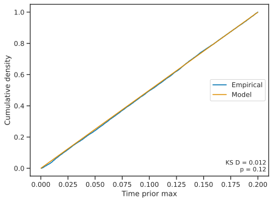
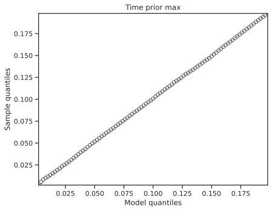
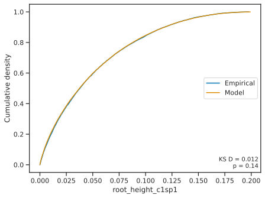
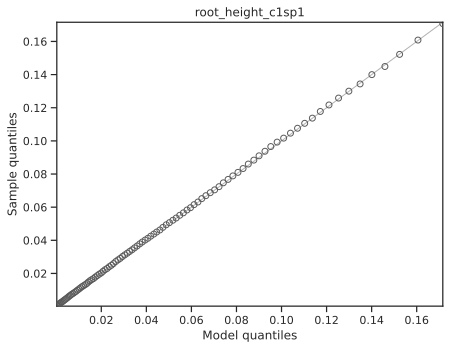
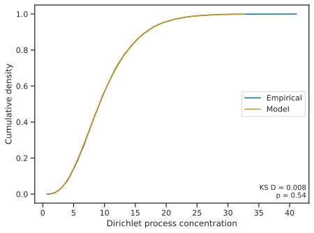
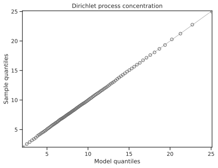
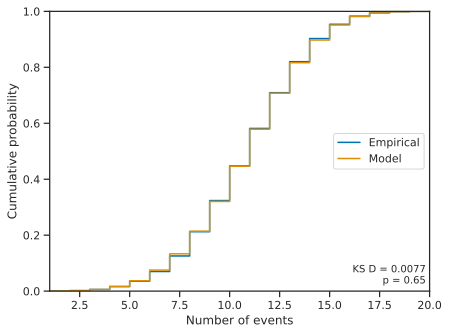
6.3 Checking credible interval coverage
The results above show that ecoevolity correctly samples from the prior distribution when data are ignored. This verifies the MCMC machinery is working, however, it does not confirm the likelihood machinery is working in lockstep with the MCMC code. To confirm that the MCMC and likelihood code are working together correctly, we will check the coverage behavior of ecoevolity when analyzing simulated data.
When a Bayesian model is correctly specified (i.e., the data being analyzed were generated under the prior distribution of the model), The nominal credible intervals of parameter estimates should match their coverage frequency. For example, a 95% credible interval of a parameter should contain the true value 95% of the time. To test this, for each of the models we looked at above that place an exponential and uniform hyperprior on divergence times, we will simulate a bunch of data sets under the model and analyze those data sets under the same model. We will then check to see if the credible intervals on parameters contain the true value the correct proportion of time (barring sampling error from having a finite number of data sets and MCMC samples).
6.3.1 Checking coverage for the exponential hyperprior
6.3.1.1 Prepare the simulated data sets
To streamline orchestrating such ecoevolity simulations and analyses, we implemented several command-line tools in pycoevolity. The first tool we need to use is pyco-eco-prep-sims, which uses simcoevolity to generate simulated data sets, and sets up (but does not run) the ecoevolity analyses of those data. Before we run pyco-eco-prep-sims, make sure you activate the project’s conda environment and navigate to the project folder:
conda activate hyper-time
cd ~/ecoevolity-hyper-timeThen, use the following command to generate simulated data sets and setup analyses of them for the model with an exponentially distributed hyperprior on divergence times (this took less than a minute to finish on my laptop):
pyco-eco-prep-sims \
--seed 1 \
--ecoevolity-dir bin \
--sim-config ecoevolity-configs/dpp-conc-hypergamma-4-10-time-hyperexp-02-pairs-20-sites-20000.yml \
--number-of-sims 100 \
--number-of-chains 4 \
--number-of-procs 4 \
--burnin 201 \
--output-dir coverage-check-exp-hyperprior \
ecoevolity-configs/dpp-conc-hypergamma-4-10-time-hyperexp-02-pairs-20-sites-20000.ymlLet’s breakdown those command arguments:
ecoevolity-configs/dpp-conc-hypergamma-4-10-time-hyperexp-02-pairs-20-sites-20000.yml- The last (positional) argument specifies the ecoevolity configs (just one in this case) we want to use to analyze all the simulated data.
--seed 1- The number to use to seed the (pseudo)random number generator.
--ecoevolity-dir bin- The path to the ecoevolity programs we want to use.
--sim-config ecoevolity-configs/dpp-conc-hypergamma-4-10-time-hyperexp-02-pairs-20-sites-20000.yml- The ecoevolity config we want to use to simulate data sets.
--number-of-sims 100- The number of data sets to simulate for each simulation config (just one config in this case).
--number-of-chains 4-
The number of
ecoevolityruns (MCMC chains) we want to run on each simulated data set. This command will not run these analyses, but will set them up for the next command we use below. --number-of-procs 4- The number of parallel processes to use to simulate the data sets. Simulating the data is pretty fast, so this usually doesn’t need to be large number.
--burnin 201-
The number of MCMC samples to remove from each
ecoevolityrun (MCMC chain). Again, this is only used to setup theecoevolityanalyses that we will run uing the next command below. --output-dir coverage-check-exp-hyperprior- The directory (“folder”) in which to put all the output files.
Note, to produce identical results with pyco-eco-prep-sims, you have to specify both the same random seed (--seed) and the same number of processes (--number-of-procs)
6.3.1.2 Analyze the simulated data sets
Next, we will analyze all the the simulated data sets using the pyco-eco-analyze-sims command-line tool. This command can take a lot longer to run. Above, we requested to generate 100 simulated data sets and to analyze each using 4 independent ecoevolity runs. So, that is a total of 400 ecoevolity analyses that pyco-eco-analyze-sims will orchestrate. On my machine, each ecoevolity analysis (MCMC chain) takes 6–15 minutes. Given 400 analyses, that is about 65 hours of computation, but we can spread them across parallel processes. For example, if we use 10 processes, all the analyses should take about 6 hours, 20 processes should take about 3 hours, etc.
Here’s an example pyco-eco-analyze-sims command to use. You can adjust the number of processes based on how many CPUs you have available and how impatient you are. Regardless of the number of processes you specify, you will get identical results (it will just take more or less time):
pyco-eco-analyze-sims \
--ecoevolity-dir bin \
--number-of-procs 40 \
coverage-check-exp-hyperprior/simulation-data.jsonBecause this command specifies a large number of processes and will take a while to run, we put it in a bash script so we can easily submit it to the queue of our HPC cluster. If you want to do the same, you can find that script in scripts directory of the project repo: scripts/cov-check-exp-analyze-sims.sh.
When pyco-eco-analyze-sims finishes, you can double check that all the analyses finished successfully by simply running the same command again, and you should see confirmation messages that all the ecoevolity and sumcoevolity analyses were already complete. For example:
$ pyco-eco-analyze-sims --ecoevolity-dir bin --number-of-procs 40 coverage-check-exp-hyperprior/simulation-data.json
Using ecoevolity programs found in '/mmfs1/scratch/jro0014/ecoevolity-hyper-time/bin'
Starting ecoevolity analyses of simulated datasets...
All ecoevolity analyses of simulated data sets were already complete.
Running sumcoevolity on ecoevolity results...
All sumcoevolity analyses of ecoevolity results were already complete.If pyco-eco-analyze-sims finds any analyses that didn’t finish successfully, it will re-run them.
6.3.1.3 Summarize the results
Next, we will use the pyco-eco-sum-sims tool to parse and summarize the results of all the analyses into a tabular file for plotting.
pyco-eco-sum-sims \
--number-of-procs 8 \
--cred-interval-percent 50 \
--config-label-file ecoevolity-configs/config-labels.yml \
coverage-check-exp-hyperprior/simulation-data.jsonYou can adjust the number of processes to use based on the CPUs you have available. This took less than 2 minutes to run on my laptop using 8 processes. Let’s breakdown the command’s arguments:
coverage-check-exp-hyperprior/simulation-data.json- The last positional argument is the path to the JSON-formatted file with all the information about the simulated data sets and their analyses.
--number-of-procs 8- Use 8 parallel processes for parsing and summarizing the results of the analyses of each simulated data set. In our case, we will be parsing the results of 100 analyses (each with 4 MCMC chains). Parsing the results is reasonably fast, so you usually don’t need to use a large number of processes.
--cred-interval-percent 50- The width of the credible intervals to use when summarizing the results. Here, we are using 50% credible intervals, and we will use these to check if they contain the true parameter values 50% of the time (barring sampling error).
--config-label-file ecoevolity-configs/config-labels.yml- A YAML-formatted file that specifies labels we would like to use to represent the models (ecoevolity config files) we used to simulate and analyze the data.
When finished, pyco-eco-sum-sims will write a gzipped summary table of all the results to coverage-check-exp-hyperprior/results-summary.tsv.gz. We will use this in the next (and last) step to plot the results.
6.3.1.4 Plot the results
To use pyco-eco-viz-sims to plot the results, you can use the following command:
pyco-eco-viz-sims \
--nevents-cred-level 0.5 \
--parameter-file plotting-configs/exponential-plotting-parameters.yml \
--prefix exp-hp-cov-check- \
coverage-check-exp-hyperprior/results-summary.tsv.gzBecause we are using 50% credible intervals (CI) on parameters, if the ecoevolity implementation is working correctly, these intervals should include the true value approximately 50% of the time. Each plot will be annotated with the proportion of simulation replicates for which the true value of the parameter fell within the 50% CI. This annotation will look something like \(p(\tau \in 0.5 \text{CI} = 0.48)\).
Given we have a finite sample of simulation replicates, we don’t expect the proportion for which the CI contains the truth to be exactly 0.5. To get a sense of how much variation around 0.5 we should expect to see due to sampling error, we can use a binomial test. A binomial test for 100 simulation replicates will be nonsignificant (have a p-value is greater than 0.05) when the proportion of replicates for which the true value falls within the CI is from 0.4 to 0.6. So, as long as we are seeing values between 0.4 and and 0.6, this indicates ecoevolity is working correctly. This is somewhat conservative too, because we also have sampling error due to finite MCMC samples that is not accounted for by the binomial test.
6.3.2 Checking coverage for the uniform hyperprior
To check the coverage for the model with a uniform hyperprior on divergence times, we can repeat the same steps as above, but simply change the path to the ecoevolity config file.
6.3.2.1 Prepare the simulated data sets
To reproduce the same results, make sure you use the same seed and number of processes.
pyco-eco-prep-sims \
--seed 1 \
--ecoevolity-dir bin \
--sim-config ecoevolity-configs/dpp-conc-hypergamma-4-10-time-hyperunif-02-pairs-20-sites-20000.yml \
--number-of-sims 100 \
--number-of-chains 4 \
--number-of-procs 4 \
--burnin 201 \
--output-dir coverage-check-unif-hyperprior \
ecoevolity-configs/dpp-conc-hypergamma-4-10-time-hyperunif-02-pairs-20-sites-20000.yml6.3.2.2 Analyze the simulated data sets
As above, you can adjust the number of parallel processes depending on the number of CPUs you have available (and your level of patience).
pyco-eco-analyze-sims \
--ecoevolity-dir bin \
--number-of-procs 40 \
coverage-check-unif-hyperprior/simulation-data.json6.3.2.3 Summarize the results
pyco-eco-sum-sims \
--number-of-procs 8 \
--cred-interval-percent 50 \
--config-label-file ecoevolity-configs/config-labels.yml \
coverage-check-unif-hyperprior/simulation-data.jsonThis takes less than 2 minutes on my laptop, but if you’re impatient and have CPUs to spare, you can increase the number of processes.
6.3.2.4 Plot the results
pyco-eco-viz-sims \
--nevents-cred-level 0.5 \
--parameter-file plotting-configs/uniform-plotting-parameters.yml \
--prefix unif-hp-cov-check- \
coverage-check-unif-hyperprior/results-summary.tsv.gzAgain, we want to check that the 50% coverage intervals for parameters contain the true value about 40-60% of the time.